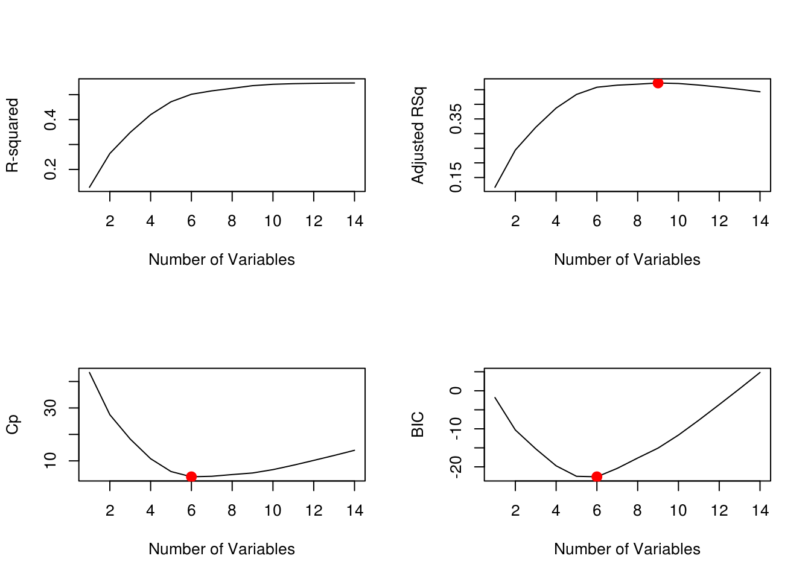
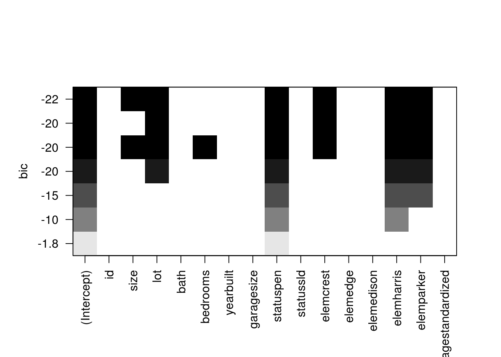
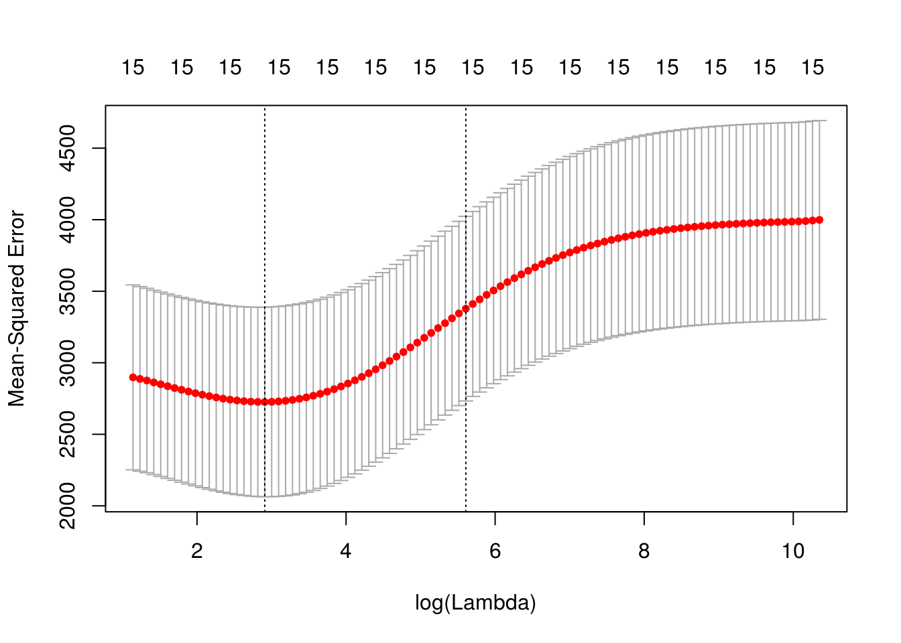
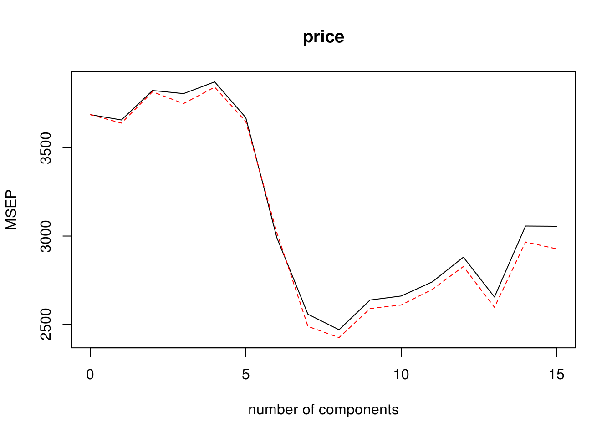

We will be looking at a housing dataset from Oregon. We are going to be building models to predict the price of a particular house in Oregon using predictor variables such as the size of the house, how many bathrooms it has, the year it was built, etc.
We have already looked at this dataset from the previous project and taking the final linear regression model and comparing it to other model methods. We will be using MSE to evaluate the model’s performance and see which one is the most accurate.
We will be using these libraries to load in the necessary functions for the particular model.
library(readxl)
library(tidyverse)
library(leaps)
library(glmnet)
library(pls)
house <- read_excel("Housing.xlsx")This is the final model from the previous project. We arrived at this conclusion after EDA of the dataset then comparing and testing different variations of a linear regression model.
modelf <- lm(price ~ elem + status + size + bedrooms, house)We will be using the regsubsets() function to subset dataset depending on the number of variables it has, in this case we have 14, so we’re setting nvmax = 14 which lets us examine all the variables. We want to optimize how many variables our model uses. We will use four metrics to evaluate this: R-Squared, Adjusted RSq, Cp and BIC. We know that Cp and BIC are unbiased estimate for the predicted error for MSE. We can see that the curve hits the lowest value at 6 variables for both Cp and BIC. We can make sure of this with the which.min() function.
regfit.full <- regsubsets(price ~ ., data = house, nvmax = 14)Reordering variables and trying again:reg.summary <- summary(regfit.full)
par(mfrow=c(2,2))
plot(reg.summary$rsq,xlab="Number of Variables",ylab = "R-squared",type="l")
plot(reg.summary$adjr2,xlab="Number of Variables",ylab="Adjusted RSq",type="l")
points(9,reg.summary$adjr2[9], col="red",cex=2,pch=20)
plot(reg.summary$cp,xlab="Number of Variables",ylab="Cp",type='l')
points(6,reg.summary$cp[6],col="red",cex=2,pch=20)
plot(reg.summary$bic,xlab="Number of Variables",ylab="BIC",type='l')
points(6,reg.summary$bic[6],col="red",cex=2,pch=20)
which.max(reg.summary$rsq)[1] 14which.max(reg.summary$adjr2)[1] 9which.min(reg.summary$cp)[1] 6which.min(reg.summary$bic)[1] 6Once we know the number of variables that is optimal for the model, we will use the forward selection method to choose which predictor variables will be best to use. The forward selection adds one predictor variable at each iteration base on how significant it is. SO it selects the best one predictor model, then the best 2 predictor model, etc. until the model doesn’t improve anymore. We can see with the BIC graph which predictors has the lowest BIC. Using the coef() function, this will show us the best 6 predictor model using the forward selection method.
regfit.f <- regsubsets(price ~ ., data = house, nvmax = 6, method = "forward")Reordering variables and trying again:summary(regfit.f)Subset selection object
Call: regsubsets.formula(price ~ ., data = house, nvmax = 6, method = "forward")
15 Variables (and intercept)
Forced in Forced out
id FALSE FALSE
size FALSE FALSE
lot FALSE FALSE
bath FALSE FALSE
bedrooms FALSE FALSE
yearbuilt FALSE FALSE
garagesize FALSE FALSE
statuspen FALSE FALSE
statussld FALSE FALSE
elemcrest FALSE FALSE
elemedge FALSE FALSE
elemedison FALSE FALSE
elemharris FALSE FALSE
elemparker FALSE FALSE
agestandardized FALSE FALSE
1 subsets of each size up to 7
Selection Algorithm: forward
id size lot bath bedrooms yearbuilt agestandardized garagesize
1 ( 1 ) " " " " " " " " " " " " " " "*"
2 ( 1 ) " " " " " " " " " " " " " " "*"
3 ( 1 ) " " " " " " " " " " " " " " "*"
4 ( 1 ) " " " " "*" " " " " " " " " "*"
5 ( 1 ) " " " " "*" " " " " " " " " "*"
6 ( 1 ) " " "*" "*" " " " " " " " " "*"
7 ( 1 ) " " "*" "*" " " "*" " " " " "*"
statuspen statussld elemcrest elemedge elemedison elemharris
1 ( 1 ) " " " " " " " " " " " "
2 ( 1 ) " " " " " " " " "*" " "
3 ( 1 ) " " " " " " " " "*" "*"
4 ( 1 ) " " " " " " " " "*" "*"
5 ( 1 ) " " "*" " " " " "*" "*"
6 ( 1 ) " " "*" " " " " "*" "*"
7 ( 1 ) " " "*" " " " " "*" "*"
elemparker
1 ( 1 ) " "
2 ( 1 ) " "
3 ( 1 ) " "
4 ( 1 ) " "
5 ( 1 ) " "
6 ( 1 ) " "
7 ( 1 ) " " plot(regfit.f)
coef(regfit.f,6)(Intercept) size lot statuspen elemcrest elemharris
119.073017 57.516429 12.809372 10.278640 -7.715081 45.048996
elemparker
-36.096131 We’ve evenly split the housing dataset which has has around 76 observations in total.
# Make the process able to be reproduced.
set.seed(1)
# Select the training and test data sets.
index <- sample(nrow(house), nrow(house) * .5, replace = F)
train <- house[index ,]
test <- house[-index ,]regsubsetsWe will now use our training and test data to figure out how many predictor variables our model should have using the regsubsets() compare to before where we use the metrics Cp and BIC. We ran the function over the training set then created a matrix model for the testing set to compare our regsubsets model using the training data. We get a set of validation errors from the training models and predicted into the outcomes in our test set, similar to how we’re predicting for simple linear models. We want the model with the lowest validation error.
# Run the regsubsets command to get the "best" model with each possible number of predictors (on the training data). Note that we are not using stepwise selections here.
regfit.best <- regsubsets(price ~ ., data = train, nvmax = 14)Reordering variables and trying again:# This creates a model matrix for our regression model for the test data. This is a useful format for many regression procedures.
test.mat <- model.matrix(price ~ ., data = test)
# Setup a vector to store the validation errors. We'll store the validation errors for each of the 14 models from the previous steps.
val.errors <- rep(NA,14)
# This for loop takes the coefficients for each of the 14 models, uses them to predict the outcomes in the test data set, and then calculates the test MSE of those predictions.
for(i in 1:14){
coefi=coef(regfit.best,id=i)
pred=test.mat[,names(coefi)]%*%coefi
val.errors[i] <- mean((test$price-pred)^2)
}
# List the validation errors.
val.errors [1] 4549.240 4611.069 3790.141 3817.808 3923.469 3781.748 3529.826 3018.360
[9] 2868.006 2871.164 2843.805 2847.292 2877.527 2877.527# List the model with the smallest validation error.
which.min(val.errors)[1] 11The smallest validation error can also be thought of as the mean square error for this particular model.
# Get the coefficients of the model with the smallest validation error.
coef(regfit.best,which.min(val.errors))(Intercept) id size lot bath bedrooms
41.4071662 -0.1586321 94.0878640 15.0218189 -4.8939796 -6.5256465
statussld elemcrest elemedge elemedison elemharris elemparker
-33.6034346 67.8868939 41.3989173 114.6011000 98.0172032 12.6973212 MSE <- val.errors[which.min(val.errors)]
d <- print(paste("MSE: ",round(MSE, 4)))[1] "MSE: 2843.8046"In ridge regression and lasso regression, we are considering modifications with constraints to the classic regression model. The constraints forces your parameter estimates to be close to 0 because for some lambda to be greater than 0, we optimize the sum of squared errors plus lambda times the sum of squared betas for each of the predictors in the model. Ridge regression has effectively a penalty term and an incentive for models to be chosen with smaller betas that still accomplishes a fairly similar sum of squares than an ordinary least squares would do.
set.seed(1)
x=model.matrix(price~.,house)[,-1]
y=house$price
# Ridge Regression
# Setup the lambda values that we'll test. This is a very comprehensive list.
grid=10^seq(10,-2,length=100)
# This uses the GLMNET function to fit ridge regression. By default this method standardizes each of the variables before fitting the model.
set.seed(1)
train=sample(1:nrow(x), nrow(x)/2)
test=(-train)
y.test=y[test]
ridge.mod=glmnet(x[train,],y[train],alpha=0,lambda=grid, thresh=1e-12)Here, we used the model matrix command where we modeled the price as a function of everything else. We used [,-1] to get rid of the intercept. Our response variable, y, is the price of the house. Since lambda is a value we can chose as the tuning parameter, we created a grid of lambdas to evaluate different choices of lambdas. We then have to apply validation set approach to try to figure out what the right level of lambda is. We set the seed and then split our data into a training set and a testing set. Our outcome for the test data is called y.test. Then, we ran glmnet to fit our rig regression model. We then used the function cv.glmnet to choose a span of lambdas and cross validated the set of lambda values we should use.
cv.out=cv.glmnet(x[train,],y[train],alpha=0)
plot(cv.out)
bestlam=round(cv.out$lambda.min, 4)Plotting the span of lambdas gave us a mean squared prediction error for the rig regression model done using cross validation and shows us how those change as a function of lambda on the log scale. The bounded region are the reasonable lambdas that we should consider. This gave us an idea that the cross validation errors are pretty comparable from close to 2.80 to about 5.80. Once lambda gets larger than that, there is inaccuracy in the prediction. From this, we can actually get an estimate of the best level of lambda. The best lambda is the minimum lambda with the minimum cross validation error. Our’s is minimized at around 18.3387.
# Using the best-lambda chosen from cross-validation, we'll fit the test data in our validation set approach
ridge.pred=predict(ridge.mod,s=bestlam,newx=x[test,])
# Using the best-lambda chosen from cross validation we will calculate the test MSE for the test data.
mean((ridge.pred-y.test)^2)[1] 2592.738out=glmnet(x,y,alpha=0)
predict(out,type="coefficients",s=bestlam)[1:14,] (Intercept) id size lot bath
86.30936202 -0.08988223 49.54599958 7.23418295 7.68324259
bedrooms yearbuilt agestandardized garagesize statuspen
-10.12803541 0.04418881 0.43582957 10.47330000 -3.85546591
statussld elemcrest elemedge elemedison
-21.79552431 -4.12300854 -13.29593148 47.62880242 MSE <- mean((ridge.pred-y.test)^2)
e <- print(paste("MSE: ",round(MSE, 4)))[1] "MSE: 2592.7385"Above, we plugged in the best level of lambda into our training test split from earlier and got our mean squared prediction error of MSE: 2592.7385 for our particular split. Our next chunk of code is us getting the coefficients of the regression model for the lambda that best fits. Finally, we see that our MSE is MSE: 2592.7385. This is a better than our third model who’s MSE was MSE: 2843.8046. The lower the MSE the better the model.
We will be using the pls package to use the pcr() function. The principal components model calculates the linear combinations of the original variables. It is used to create models that minimizes multicollinearity between predictors and attempts to mitigate overfitting. Below, we’re set up a pcr model using cross validation then choosing the model with the optimal components.
set.seed(2)
pcr.fit=pcr(price~., data=house,scale=TRUE,validation="CV")
validationplot(pcr.fit,val.type="MSEP")
which.min(RMSEP(pcr.fit)$val[1,,]) - 18 comps
8 Based on the graph above, the value when M = 8 is the lowest, so we use 8 components. Below is our PCR model using 8 components. Then we predicted the 8 component model unto the test data, allowing us to calculate the MSE.
pcr.fit=pcr(y~x,scale=TRUE,ncomp=8)
summary(pcr.fit)Data: X dimension: 76 15
Y dimension: 76 1
Fit method: svdpc
Number of components considered: 8
TRAINING: % variance explained
1 comps 2 comps 3 comps 4 comps 5 comps 6 comps 7 comps 8 comps
X 23.903 36.706 46.9 56.65 65.20 72.80 79.52 85.25
y 6.704 7.681 11.0 11.05 18.07 32.49 46.95 47.65pcr.pred=predict(pcr.fit, x[test,],ncomp=8)
MSE <- mean((pcr.pred-y.test)^2)
f <- print(paste("MSE: ",round(MSE, 4)))[1] "MSE: 1987.3417"The cross validation error when using principal components regression is MSE: 1987.3417, which is considerably less than the error when using the other candidate models.
We have already calculated the MSE values for the last 3 candidate models however we still need to do it for the first two.
set.seed(1)
index <- sample(nrow(house), nrow(house) * .5, replace = F)
train <- house[index ,]
test <- house[-index ,]
ModLM <- lm(price ~ elem + status + size + bedrooms, data = train)
probabilities <- predict(ModLM, newdata = test)
MSE <- mean((probabilities - test$price)^2)
a <- print(paste("MSE: ",round(MSE, 4)))[1] "MSE: 3049.7292"set.seed(1)
regfit.best <- regsubsets(price ~ ., data = train, nvmax = 6, method = "forward")Reordering variables and trying again:test.mat <- model.matrix(price ~ ., data = test)
val.errors <- rep(NA,6)
# This for loop takes the coefficients for each of the 30 models, uses them to predict the outcomes in the test data set, and then calculates the test MSE of those predictions.
for(i in 1:6){
coefi=coef(regfit.best,id=i)
pred=test.mat[,names(coefi)]%*%coefi
val.errors[i] <- mean((test$price-pred)^2)
}
MSE <- val.errors[which.min(val.errors)]
b <- print(paste("MSE: ",round(MSE, 4)))[1] "MSE: 3192.8287"Now we’re looking at the MSe values for each of the candidate models.
Previous Model(a) MSE: 3049.7292
Forward Selection Method(b) MSE: 3192.8287
Train/Test Regsubset(d) MSE: 2843.8046
Ridge Regression Model(e) MSE: 2592.7385
Principal Component Regression(f) MSE: 1987.3417
We can see that the principal component regression outperforms the other models is having the lowest mean square error.